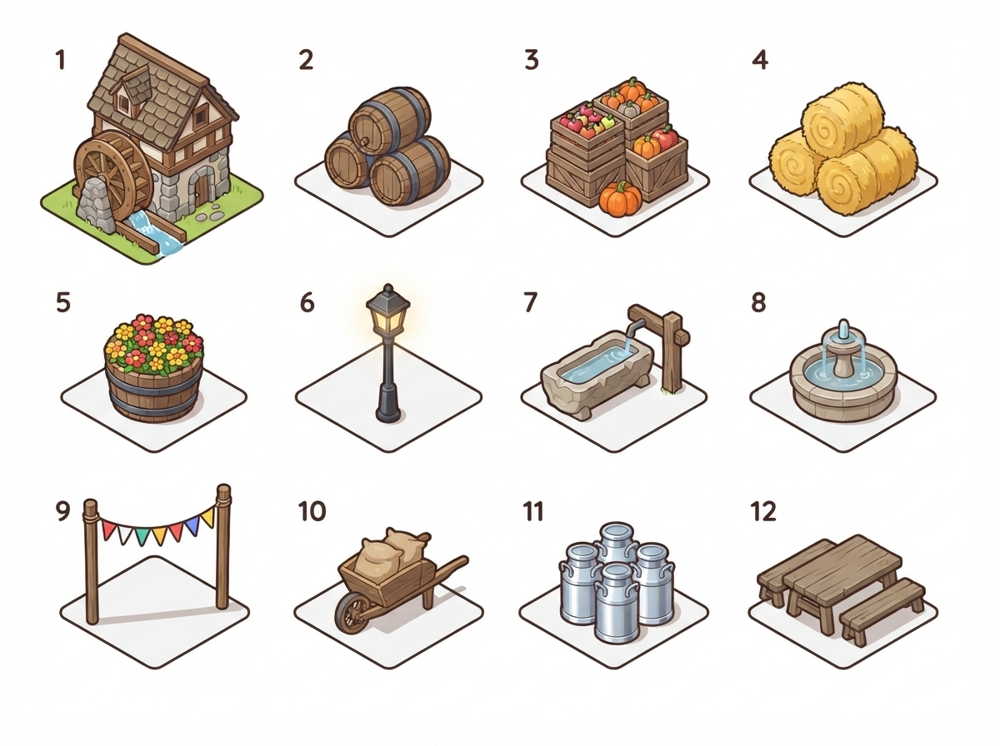

Green frame = the pick used in the game. To swap: python3 .claude/skills/openart-pictures/fetch.py pick sheet70-square-deco <version>, then import again.

Bright, friendly mobile-game cartoon, thick rounded dark outlines, flat colours with simple cel shading, chunky cute proportions, three-quarter top-down view (isometric, like Hay Day), in exactly the art style of reference image 1 (use it only for the style). A sheet of 12 decorations for a village square, in 4 columns and 3 rows, numbered row by row. Each is ONE solid object standing on its own flat diamond-shaped footprint about twice as wide as deep, with a small soft shadow, evenly spaced with wide white space between them, none touching, isolated on a plain pure white background. Every object is a plain ordinary object with no faces: no eyes, no smiles. No text, no letters, no numbers, no labels, no captions, no frames, no people, no animals, no loose bits beside the objects. 1 a small village water mill: a stone ground floor and a timber upper floor with a steep roof, a big wooden water wheel turning on its left side, and a short wooden water channel and a little stream at its foot; no sails; 2 a stack of three wooden barrels with dark iron hoops; 3 a stack of wooden crates full of red apples and orange pumpkins; 4 three round golden hay bales piled together; 5 a wooden half-barrel tub full of red and yellow flowers; 6 a black iron street lantern on a post with a warm glowing lamp; 7 a stone horse trough with water in it beside a wooden hitching post; 8 a small round stone fountain with a little water spout; 9 two wooden poles with a string of colourful triangle flags between them (blank flags, no letters); 10 a wooden wheelbarrow with two sacks in it; 11 three shiny metal milk churns standing together; 12 a plain wooden outdoor table with two benches.